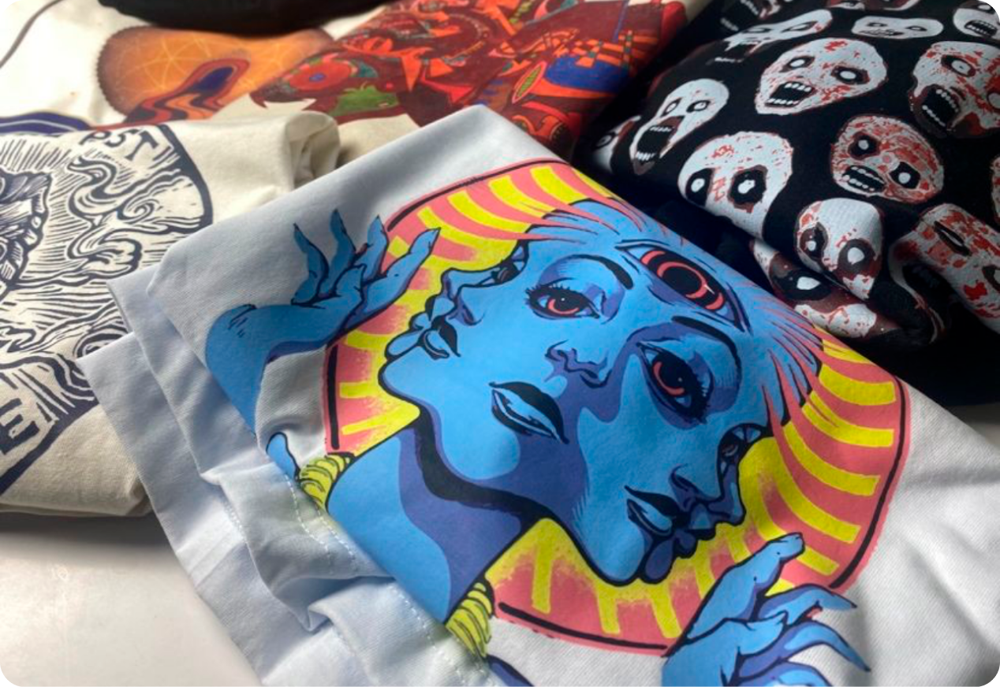
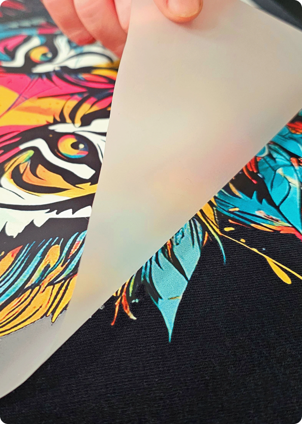
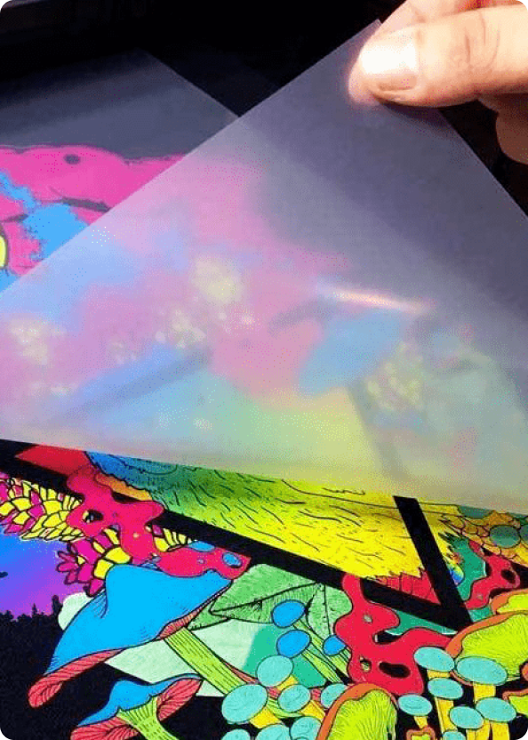
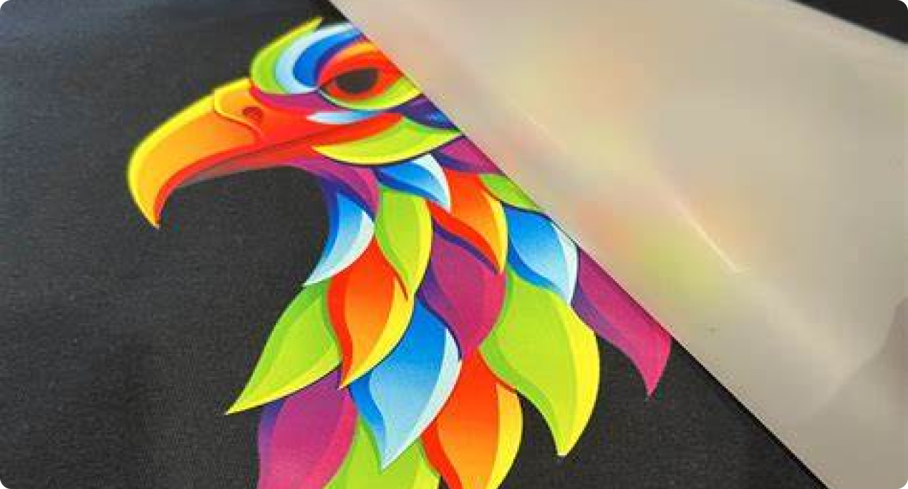
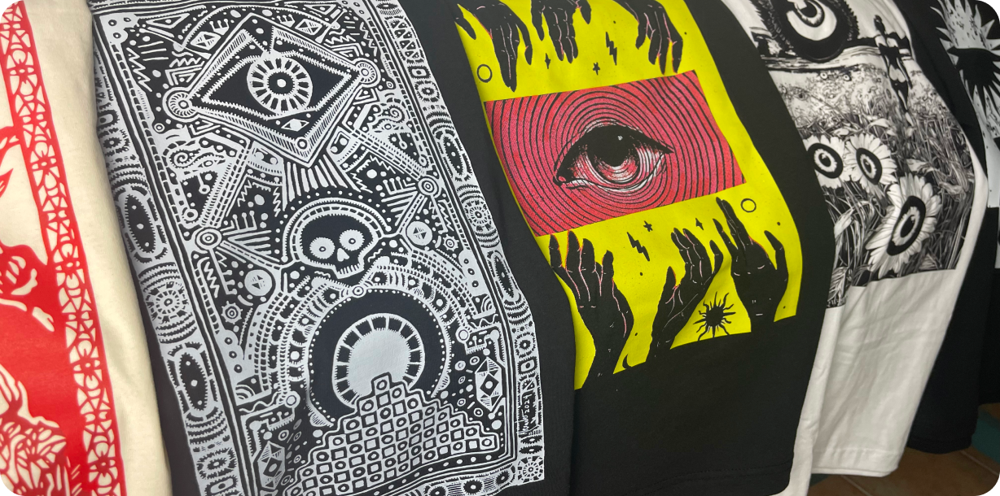

Naša DTF štampa (Direct to Film) predstavlja najnoviju tehnologiju u svetu štampe, savršenu za kreiranje personalizovanih majica, dukseva, torbi, i drugih tekstilnih proizvoda. Ova metoda omogućava precizne i živopisne otiske direktno na film, koji se zatim prenose na materijal, pružajući vrhunski kvalitet i dugotrajnost.



DTF štampa je idealna za izradu promotivnih proizvoda, modnih kolekcija i svih vrsta personalizovanih artikala. Bez obzira na složenost dizajna, ova tehnika omogućava štampu bogatih boja i visokih detalja, a posebno je pogodna za štampu na tekstilu tamnih boja, jer garantuje postojanost i fleksibilnost otiska.
- Visoka rezolucija i bogate boje
- Dugotrajni otisci otporni na pranje i habanje
- Pogodna za različite vrste tekstila (pamuk, poliester, mešavine)
- Fleksibilnost u kreiranju malih i velikih serija proizvoda
- Štampa na tamnim i svetlim materijalima sa savršenim detaljima


Bilo da vam trebaju unikatne majice, duksevi ili drugi personalizovani proizvodi, naša DTF tehnologija štampe obezbeđuje kvalitet koji će zadovoljiti i najzahtevnije klijente. Kontaktirajte nas danas i otkrijte sve prednosti DTF štampe za vaš projekat!
KONTAKTIRAJTE NAS